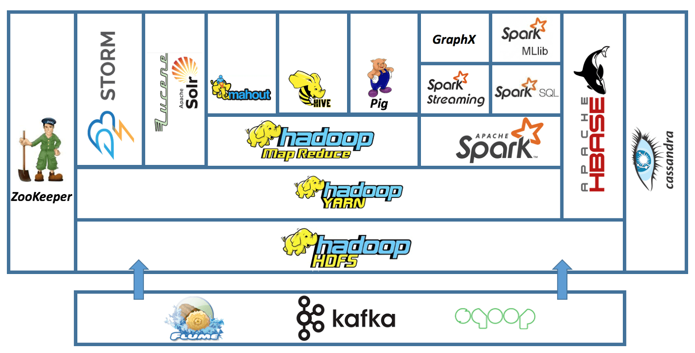

数字系统：计算机系统的 “公理系统”
数字系统 = 状态机
- 状态：触发器
- 迁移：组合逻辑
- “数码管” 作为第一个例子：UNIX Philosophy 和 “编程” 的力量
- NEMU Full System Emulator
数字系统的设计 = 定义状态机
- HDL (Verilog)
- HCL (Chisel)
- 编译生成 Verilog
- HLS (High Level Synthesis)
- “从需求到代码”
编程语言和算法
C/Java/Python 程序 = 状态机
- 状态：栈、堆、全局变量
- 迁移：语句 (或语句一部分) 的执行
- “程序设计语言的形式语义”
- hanoi-nr.c
编程 = 描述状态机
- 将人类世界的需求映射到计算机世界中的数据和计算
- 调试理论：Fault, Error 和 Failure
- 允许使用操作系统提供的 API
- 例子：
write(fd, buf, size)持久化数据
- 例子：
如何使程序在数字系统上运行？
指令集体系结构
- 在逻辑门之上建立的 “指令系统” (状态机)
- The RISC-V Instruction Set Manual
- 既容易用电路实现，又足够支撑程序执行
编译器 (也是个程序)
- 将 “高级” 状态机 (程序) 翻译成的 “低级” 状态机 (指令序列)
- 翻译准则：external visible 的行为 (操作系统 API 调用) 等价
操作系统 (也是个程序)
- 状态机 (运行中程序) 的管理者
- 使程序可以共享一个硬件系统上的资源 (例如 I/O 设备)
操作系统对象和 API

- Concurrency - thread.h 打开潘多拉的盒子
- Virtualization - sh-xv6.c; 金山游侠、按键精灵和变速齿轮
- Persistence - fat-tree.c
你们获得了 “实现一切” 的能力！
M1 - pstree
- 打印进程树 (文件系统 API; procfs)
M2 - plcs
- 实现并行计算加速 (线程和同步)
M3 - sperf
- strace (pipe; fork; execve)
M4 - crepl
- 动态链接和加载 (fork; execve; dlopen)
M5 - freov
- 文件系统解析 (mmap)
你们也获得了 “理解一切” 的能力！
“操作系统” 课给了你程序的 “最底层” 的状态机视角
- 也给了很多之前很难回答问题的答案
- 如何创造一个 “最小” 的可执行文件？
a.out是什么？a.out执行的第一条指令在哪里？printf是如何被调用的？a.out执行了哪些系统调用？a.out执行了多少条指令？
从逻辑门到计算机系统

刷一下手机，你的计算机系统经历了非常复杂的过程
- 应用程序 (app) → 库函数 → 系统调用 → 操作系统中的对象 → 操作系统实现 (C 程序) → 设备驱动程序 → 硬件抽象层 → 指令集 → CPU, RAM, I/O设备 → 门电路
操作系统课给这个稍显复杂的过程一个清晰的轮廓
- “这一切是可以掌控的”
- Ask GPT! RTFM! RTFSC!
所以我们学了什么？
Operating systems (最重要的那个 piece): you're delighted
你不再惧怕任何 “system”
- 嵌入式系统
- 通用操作系统
- 分布式系统
- ……
也不再惧怕任何 “需求” 的实现
- 找到合适的系统调用实现
- 做不到？可以自己加个系统调用
- 软件上实现不了？可以改 CPU 来支持！
Hacker's Delights: 新的“理解”
“一切皆状态机”
- 状态的副本 (fork) 可以用来做什么？
- Model checking, failure recovery, ...
“死锁检测: lockdep 在每次 lock/unlock 的时候插入一条 printf”
- 这就是 dynamic analysis 的本质
- 如何减少 printf 的数量、怎么巧妙地记录、怎样分析日志……
- 如何调控程序的执行？找到 bug 还是绕开 bug？
“文件系统是磁盘上的一个数据结构”
- 通过 append-only 实现 journaling
- LSM Tree 和分布式 key-value store
- Block chain 也是一个数据结构！
并发：走向分布式系统
如何为网络上的多台计算机提供统一的应用程序接口？
- 把多个分布的、随时可能离线的计算机组成一个存储系统
- 在存储的基础上完成计算

虚拟化：重新理解操作系统设计
Microkernel, Exokernel, Unikernel
- 没有人规定操作系统里一定要有 “文件”、“进程” 这些对象

持久化：重新理解持久存储设计
文件系统没能解决的需求
- 大量的数据 (订单、用户、网络……) + 非简单目录遍历性质的查询
“数据库”：虚拟磁盘上的数据结构
- 就像我们在内存 (random access memory) 上构建各种数据结构
- Binary heap, binary search tree, hash table, ...
- 典型的数据库
- 关系数据库 (二维表、关系代数)
- key-value store (持久化的
std::map) - VCS (目录树的快照集合)
- SSD 和 NVM 带来的新浪潮
和操作系统相关的 Topics
- Computer Architecture
- 计算机硬件的设计、实现与评估
- Computer Systems
- 系统软件 (软件) 的设计、实现与评估
- Network Systems
- 网络与分布式系统的设计、实现与评估
- Programming Languages
- 状态机 (计算过程) 的描述方法、分析和运行时支持
- Software Engineering
- 程序/系统的构造、理解和经验
- System/Software Security
- 系统软件的安 (safety) 全 (integrity)